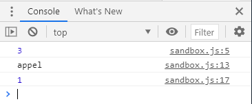
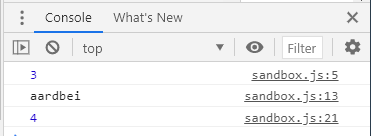
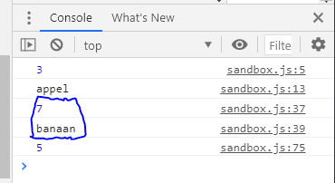
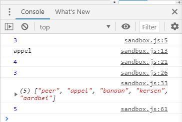

Voorheen hebben jullie gehad hoe Strings, Booleans, numbers etc werken en hoe je een
waarde toekent aan de variable met een bepaalde data type.
Arrays is ook een data type.
Arrays is een collectie met elementen. Het houdt een lijst met waardes bij. De waardes van
de array kunnen van verschillende data types zijn.
Hieronder zie je stapsgewijs hoe je een array kan aanmaken, hoe je de array kan vullen en
hoe je een value kan benaderen. Om de waarde uit de array te lezen gebruiken we index. De
index geeft de positie van de array aan. De telling van een array begint bij 0. Anders dan wat
wij gewend zijn om de telling bij 1 te beginnen. Neem je tijd om te bestuderen hoe arrays
werkt.
<script>
// 1. Aan maken van een array. met [] geef je aan dat je een
lege lijst wilt maken.
let products = [];
// 2. Toevoegen van producten in de array
products = ["Schoenen", "Sjaal", "Handschoenen", "Muts"];
// 3. Een waarde benaderen in de array.
console.log(products[0]);
</script>
We hebben nu een array gemaakt
We hebben nu een array gemaakt met String als values. Je zou ook andere data types in
kunnen opslaan..
<script>
// 1. Aan maken van een array. met [] geef je aan dat je een
lege lijst wilt maken.
let randomNumbers = [];
// 2. Toevoegen van producten in de array
randomNumbers = [1, 4, 5, 8, 9];
// 3. Een waarde benaderen in de array.
console.log(randomNumbers[4]);
</script>
Leerdoelen
Leerdoelen
Arrays functies gebruiken
De waardes van een array uitlezen
De indexes
“Opdracht 1 t/m 9 horen bij elkaar. Maak deze opdrachten ook in 1 js bestand.”
Opdracht 1
Maak een array met 10 getallen die willekeurig in een array staan. Print de array uit in jouw
console.
Op welke index staat “Appel”. Gebruik de index waarde om “Appel” in jouw console uit te
printen.
Antwoord:
let fruiten = [];
fruiten = ['peer', 'appel', 'banaan', 'kersen', 'aardbei'];
console.log (fruiten[1]);
const fruit = fruiten.indexOf("appel");
console.log(fruit);

Opdracht 4
Op welke index staat “Aardbei”. Gebruik de index waarde om “Aardbei” in jouw console uit te
printen.
Antwoord:
let fruiten = [];
fruiten = ['peer', 'appel', 'banaan', 'kersen', 'aardbei'];
console.log (fruiten[4]);
const fruit = fruiten.indexOf("aardbei");
console.log(fruit);

Opdracht 5
We gaan het iets complexer maken met het bepalen van de fruit. Er zijn nu 2 arrays
gedefinieerd, namelijk een array met getallen en een array met fruitsoorten.
De eerste array bepaalt welke fruitsoort er geprint moet worden. Gebruik de Math.random() methode om te
bepalen welke waarde uit de eerste array wordt gehaald.
Vervolgens kun je de waarde gebruiken als index en de fruitsoort printen in jouw console. Helaas, de getallen 5 t/m 10 uit
de eerste array zullen een undefined teruggeven
als je dat als index bij de fruit array zal gebruiken. Hiervoor kun je de modulo (%) gebruiken. Zoek uit hoe modulo werkt en pas dat
toe aan de waarde van de eerste array. Als resultaat zal er altijd een fruitsoort uitgeprint
worden.
gebruik math random methode om te bepalen welke waarde uit de eerste array wordt gehaald.
Vervolgens kun je de waarde gebruiken als index en de fruitsoort printen in jouw console.
Zoek uit hoe modulo werkt en pas dat toe aan de waarde van de eerste array.
Antwoord:
Zoek uit hoe modulo (%) werkt en pas dat toe aan de waarde van de eerste array.
De remainder operator (%) retourneert de rest die overblijft als een operand wordt gedeeld door een tweede operand. Het heeft altijd het teken van het dividend nodig
voorbeeld:
<script>
var x = 5;
var y = 2;
var z = x % y;
document.getElementById("demo").innerHTML = z;
uitkomst: 1
</script>
Antwoord:
gebruik math random methode om te bepalen welke waarde uit de eerste array wordt gehaald.
const randomNumber = numbers[Math.round(Math.random() *10)];
console.log(randomNumber);
Antwoord:
Vervolgens kun je de waarde gebruiken als index en de fruitsoort printen in jouw console.
let math = Math.floor(Math.random()* numbers.length);
console.log(math);
console.log(fruiten[math % 5]);

Opdracht 6
Je hebt nu geleerd hoe je arrays kunt aanmaken en de waarde kunt benaderen. Arrays
hebben ook functies die je kunt gebruiken. Zoek uit wat push(), pop(), shift(), slice(), splice(),
sort(). Maak gebruik van de fruits array en maak voor elke functie een voorbeeld en geef in
commentaar wat het doet.
Wat is push ()?
De methode push () voegt nieuwe items toe aan het einde van een array en retourneert de nieuwe lengte.
const artists = ['michael', 'elvis'];
artists.push('justin', 'charlie');
console.log(artists); // ['michael', 'elvis', 'justin', 'charlie']
Wat is pop()?
De methode pop () verwijdert het element op de opgegeven positie.
fruits = ['apple', 'banana', 'cherry']
fruits.pop(1)
print(fruits) // ['apple', 'cherry']
Wat is shift()?
De methode shift () verwijdert het eerste item van een array.
Click the button to remove the first element of the array.
<p>Click the button to remove the first element of the array.</p>
<button onclick="myFunction()">Try it</button>
<p id="demo"></p>
<script>
var fruits = ["Banana", "Orange", "Apple", "Mango"];
document.getElementById("demo").innerHTML = fruits;
function myFunction() {
fruits.shift();
document.getElementById("demo").innerHTML = fruits;
}
</script>
Wat is slice()?
De methode slice () extraheert een sectie van een string en retourneert deze als een nieuwe string, zonder de originele string te wijzigen.
const str = 'The quick brown fox jumps over the lazy dog.';
console.log(str.slice(31));
// expected output: "the lazy dog."
wat is splice()?
De methode splice () voegt items toe aan / verwijdert uit een array en retourneert de verwijderde item (s).
<p>Click the button to add elements to the array.</p>
<button onclick="myFunction()">Try it</button>
<p id="demo"></p>
<script>
var fruits = ["Banana", "Orange", "Apple", "Mango"];
document.getElementById("demo").innerHTML = fruits;
function myFunction() {
fruits.splice(2, 0, "Lemon", "Kiwi");
document.getElementById("demo").innerHTML = fruits;
} // expected output lemon & kiwi wordt toegevoegd aan het ruitje fruits
</script>
Wat is sort ()?
De methode sort () sorteert de items van een array.
<button onclick="myFunction()">Try it</button>
<p id="demo"></p>
<script>
var fruits = ["Banana", "Orange", "Apple", "Mango"];
document.getElementById("demo").innerHTML = fruits;
function myFunction() {
fruits.sort();
document.getElementById("demo").innerHTML = fruits;
} // expected output Apple,Banana,Mango,Orange
</script>
opdracht 7
Naast de functies die je van de array kunt gebruiken heb je ook nog de “length” property die
je kunt gebruiken. Hiermee kan je de grootte van de array opvragen. Gebruik de length
property en print in de console uit hoe groot de fruits array is.
Antwoord:
console.log(fruiten.length);

Opdracht 8
De bestaande values van de array kan je ook aanpassen. Zoek uit hoe je op een specifieke
index de waarde kan aanpassen. Pas de value “Peer” naar “Sinaasappel”.